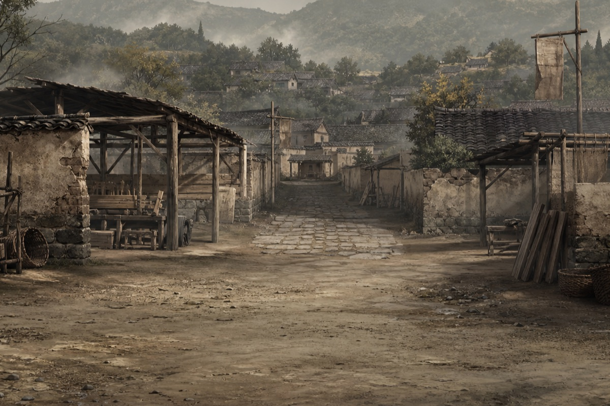
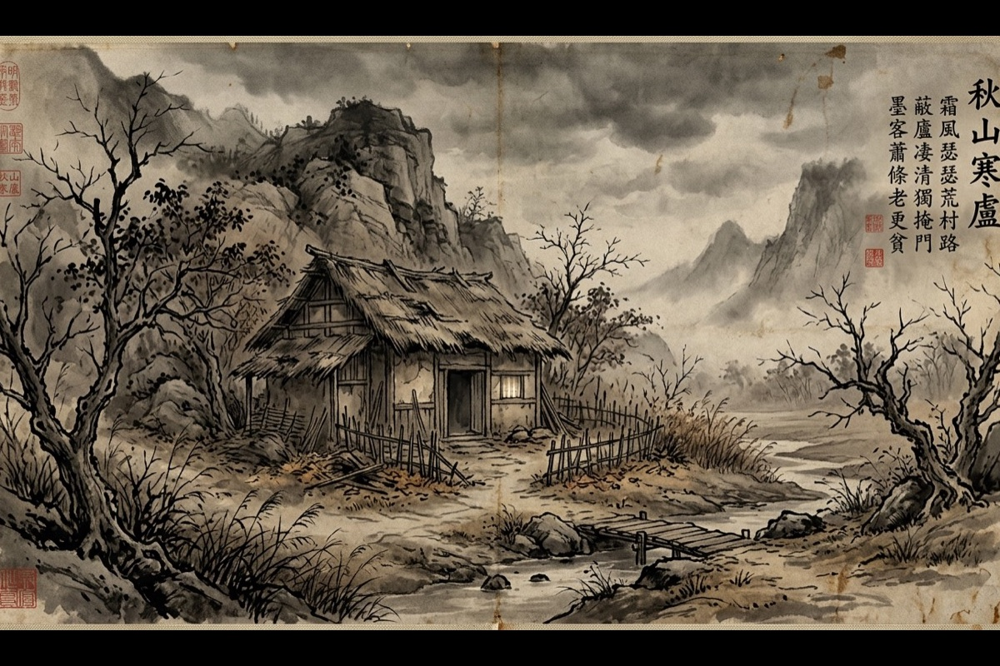
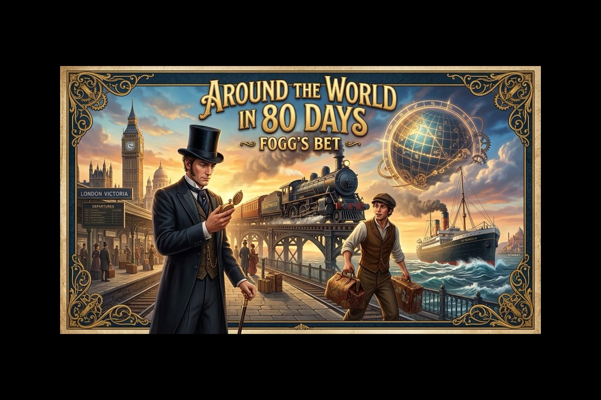

1918 · WEIZHUANG阿Q正传 · 未庄
鲁迅《阿Q正传》
你不是读者，是未庄的看客。每一次开口与沉默，都会照见自己。
- 走进未庄街头，遇见阿Q、王胡、小D、赵府门房
- 说什么、不说什么，全由你定——立场会跟着变
- 阿Q 会真的接你的话，不是预设选项
需要填一个自己的 DeepSeek API key（免费额度够玩），游戏本身不收任何费用。
走进未庄
把读过的书，做成能走进去的地方。
鲁迅的未庄、聊斋的促织、凡尔纳的环球赌约——
三部经典文本，三款能在浏览器里直接开玩的游戏。

1918 · WEIZHUANG你不是读者，是未庄的看客。每一次开口与沉默，都会照见自己。
需要填一个自己的 DeepSeek API key（免费额度够玩），游戏本身不收任何费用。
走进未庄
宣德 · THE CRICKET一个孩子化作一只促织，替全家斗赢了整个天下。而你，要把这一局亲手打完。

1872 · 80 DAYS八十天，两万英镑，一秒也不容差池的环球狂澜。
不是把书改编成游戏，是换个方式，让人重新走进去。
AI 把做互动的代价从团队级压到个人级。以前要一个小团队做几周，现在一个人做几个晚上——这是三年前不敢想的事。
玩法可以新，内核不能动。鲁迅的冷、聊斋的悲、凡尔纳的精确，这些得守住。游戏只是让人愿意走进去的那个门。
不做安装、不搞注册、不用下载客户端。链接点开就能玩，手机横过来也能玩。好东西不该卡在门槛上。
读一本书，你是旁观者。
玩一本书，你成了里面的人。
这三款游戏会一直在岛上更新。有新的，也会放进这个匣子里。
回岛上逛逛